AutoPTS on Linux
This tutorial shows how to setup AutoPTS client on Linux with AutoPTS server running on Windows 10 virtual machine. Tested with Ubuntu 20.4 and Linux Mint 20.4.
You must have a Zephyr development environment set up. See Getting Started Guide for details.
Supported methods to test zephyr bluetooth host:
Testing Zephyr Host Stack on QEMU
Testing Zephyr Host Stack on native_sim
Testing Zephyr combined (controller + host) build on Real hardware (such as nRF52)
For running with QEMU or native_sim, see Running on QEMU or native_sim.
Setup Linux
Please follow Getting Started Guide on how to setup Linux for building and flashing applications.
Setup Windows 10/11 virtual machine
Choose and install your hypervisor like VMWare Workstation(preferred) or VirtualBox. On VirtualBox could be some issues, if your host has fewer than 6 CPU.
Create Windows virtual machine instance. Make sure it has at least 2 cores and installed guest extensions.
Setup tested with VirtualBox 7.2.4 and VMWare Workstation 16.1.1 Pro.
Update Windows
Update Windows in:
Start -> Settings -> Update & Security -> Windows Update
Setup NAT
It is possible to use NAT and portforwarding to setup communication between a Linux host and a Windows guest. This is easiest setup for VirtualBox, and does not require any static IPs to be configured, and will not get blocked by the Windows Firewall.
VirtualBox
Open virtual machine network settings. On adapter 1 you will have created by default NAT. Open the Port Forwarding menu an add the ports you want.
{kind=link}
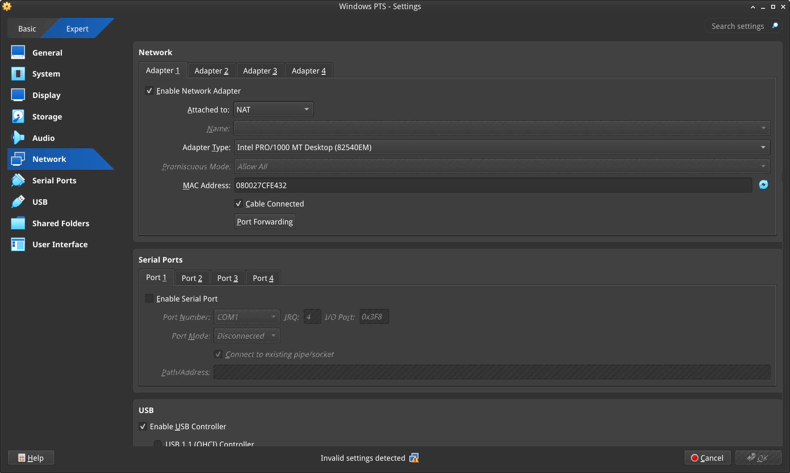
For example setting up the following will allow you to use
localhost:65000 and localhost:65002 (or 127.0.0.0:65000 and 127.0.0.0:65002)
to connect to an AutoPTS Server in Windows running on ports 65000 and 65002.
{kind=link}
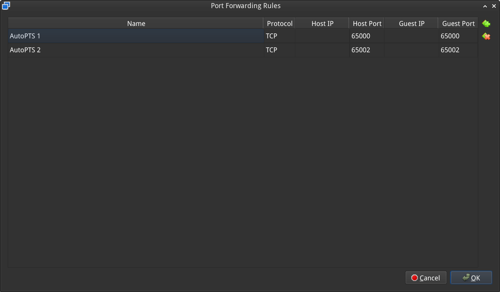
Setup static IP
If you cannot or do not want to use NAT it is possible to configure a static IP.
VMWare Works
On Linux, open Virtual Network Editor app and create network:
{kind=link}
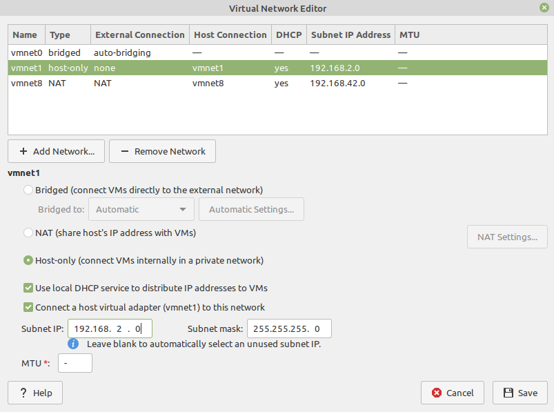
Open virtual machine network settings. Add custom adapter:
{kind=link}
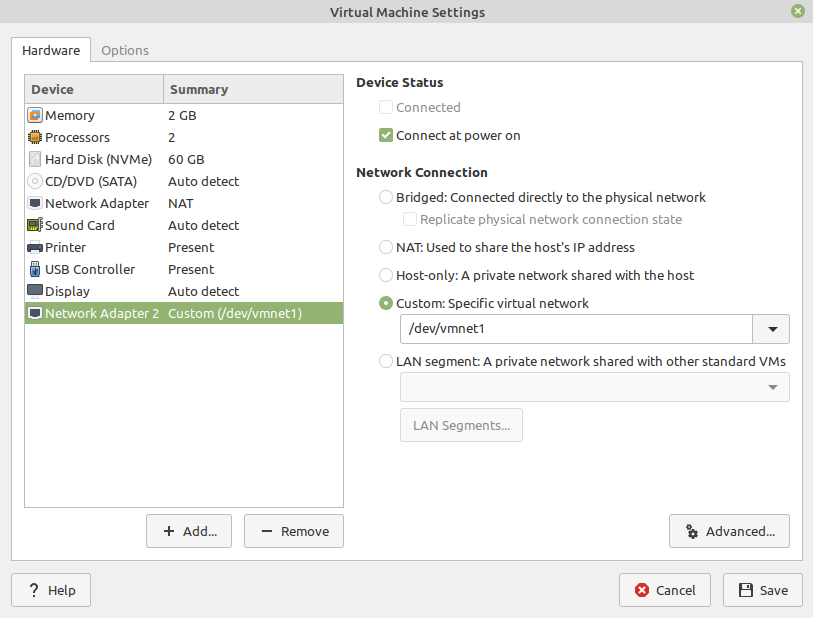
If you type ‘ifconfig’ in terminal, you should be able to find your host IP:
{kind=link}
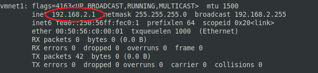
VirtualBox
VirtualBox on Linux, macOS and Solaris Oracle VM VirtualBox will only allow IP addresses in
192.168.56.0/21 range to be assigned to host-only adapters, so if using a static address with
VirtualBox this is the only address range you can use.
Go to:
File -> Tools -> Network Manager
and create network:
{kind=link}
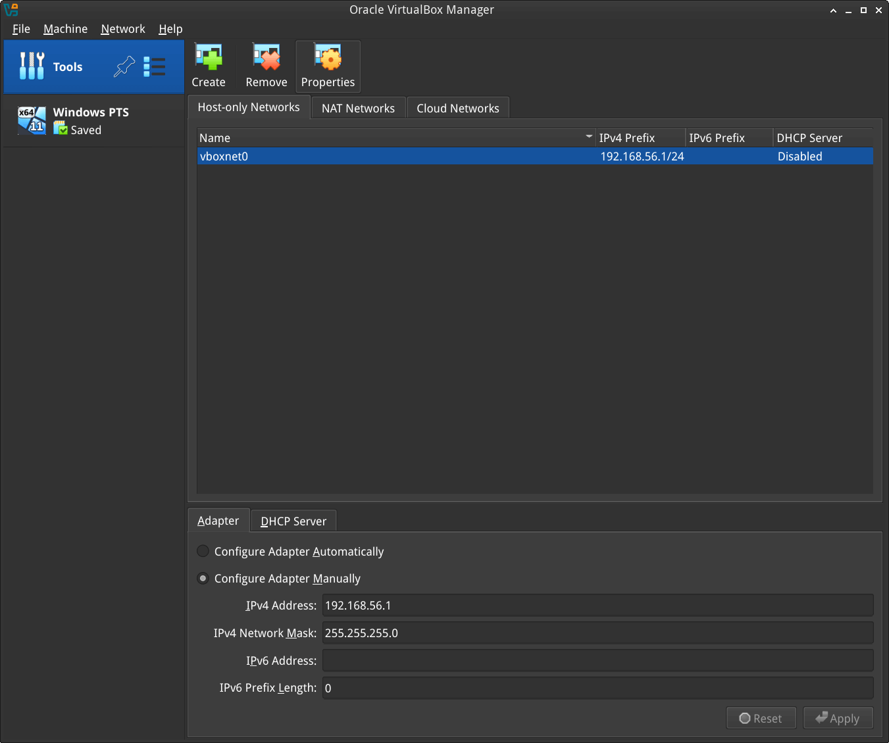
Open virtual machine network settings. On adapter 1 you will have created by default NAT. Add adapter 2:
{kind=link}
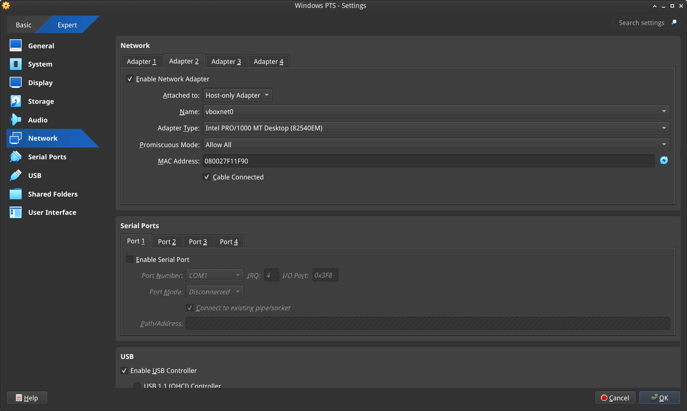
Windows
Setup static IP on Windows virtual machine. Go to
Settings -> Network & Internet -> Ethernet -> Unidentified network -> Edit
and set:
{kind=link}
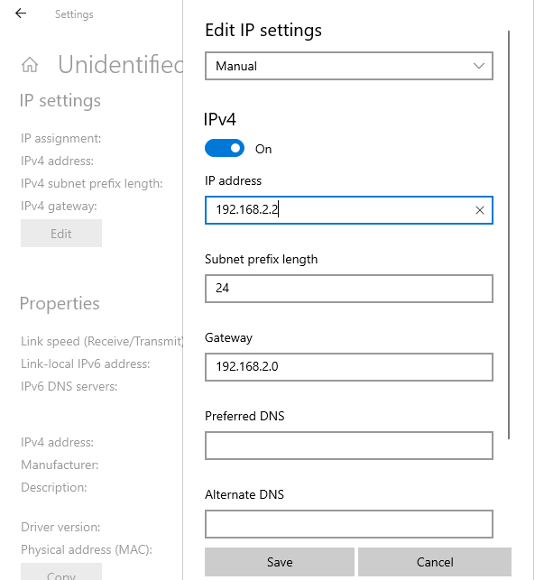
Install Python 3
Download and install latest Python 3 on Windows. Let the installer add the Python installation directory to the PATH and disable the path length limitation.
{kind=link}
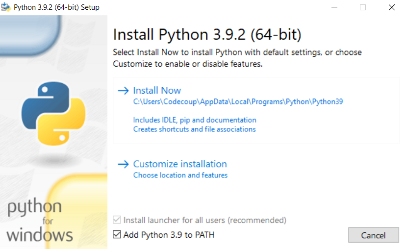
{kind=link}
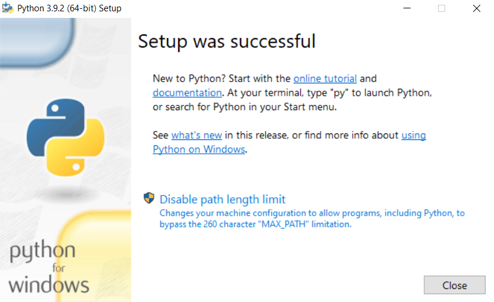
Install Git
Download and install Git. During installation enable option: Enable experimental support for pseudo consoles. We will use Git Bash as Windows terminal.
{kind=link}
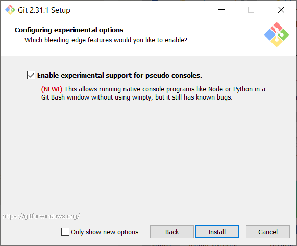
Install PTS
On Windows virtual machine, install the latest PTS from https://pts.bluetooth.com/download. Remember to install drivers from installation directory “C:/Program Files (x86)/Bluetooth SIG/Bluetooth PTS/PTS Driver/win64/CSRBlueCoreUSB.inf”
{kind=link}
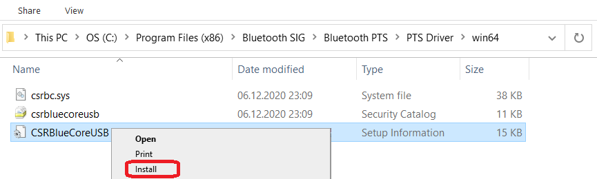
Note
Starting with PTS 8.0.1 the Bluetooth Protocol Viewer is no longer included. So to capture Bluetooth events, you have to download it separately.
Connect PTS dongle
With VirtualBox there should be no problem. Just find dongle in Devices -> USB and connect.
With VMWare you might need to use some trick, if you cannot find dongle in VM -> Removable Devices. Type in Linux terminal:
usb-devices
and find in output your PTS Bluetooth USB dongle
{kind=link}
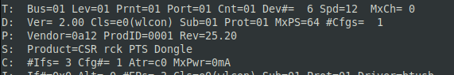
Note Vendor and ProdID number. Close VMWare Workstation and open .vmx of your virtual machine (path similar to /home/codecoup/vmware/Windows 10/Windows 10.vmx) in text editor. Write anywhere in the file following line:
usb.autoConnect.device0 = "0x0a12:0x0001"
just replace 0x0a12 with Vendor number and 0x0001 with ProdID number you found earlier.
Connect devices (only required in the actual hardware test mode)
{kind=link}
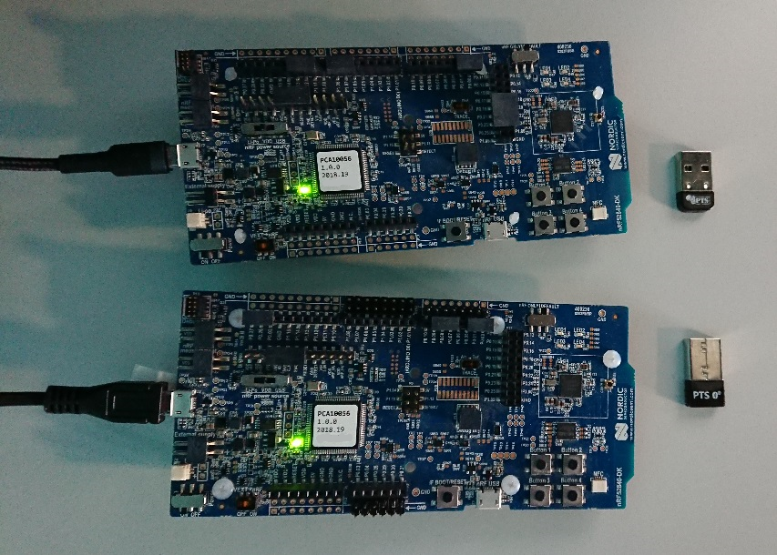
{kind=link}
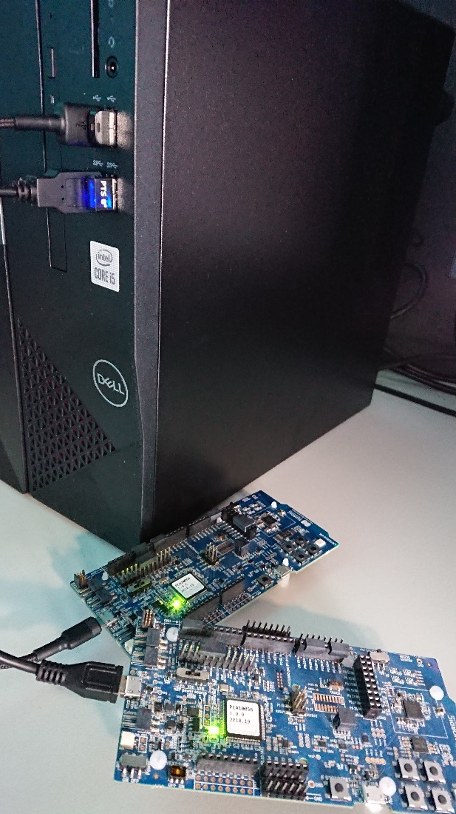
Setup auto-pts project
AutoPTS client on Linux
Clone auto-pts project:
git clone https://github.com/auto-pts/auto-pts.git
Install socat, that is used to transfer BTP data stream from UART’s tty file:
sudo apt-get install python-setuptools socat
Install required python modules:
cd auto-pts
pip3 install --user -r autoptsclient_requirements.txt
Autopts server on Windows virtual machine
In Git Bash, clone auto-pts project repo:
git clone https://github.com/auto-pts/auto-pts.git
Install required python modules:
cd auto-pts
pip3 install --user wheel
pip3 install --user -r autoptsserver_requirements.txt
Restart virtual machine.
Running AutoPTS
Please follow the information from https://github.com/zephyrproject-rtos/zephyr/tree/main/tests/bluetooth/tester on how to build, flash and run the Bluetooth Tester application.
Server and client by default will run on localhost address. Run the server in the Windows virtual machine:
python ./autoptsserver.py
{kind=link}
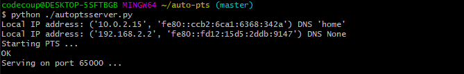
See also https://github.com/auto-pts/auto-pts for additional information on how to run auto-pts.
Testing Zephyr Host Stack on hardware
python ./autoptsclient-zephyr.py zephyr-master -t /dev/ttyACM0 -b BOARD -i SERVER_IP -l LOCAL_IP
Where /dev/ttyACM0 is the tty for the board,
BOARD is the board to use (e.g. nrf53_audio),
SERVER_IP is the IP of the AutoPTS server,
LOCAL_IP is the local IP of the Linux machine.
Testing Zephyr Host Stack on QEMU
A Bluetooth controller needs to be mounted. For running with HCI UART, please visit HCI UART.
python ./autoptsclient-zephyr.py zephyr-master BUILD_DIR/zephyr/zephyr.elf -i SERVER_IP -l LOCAL_IP
Where BUILD_DIR is the build directory,
SERVER_IP is the IP of the AutoPTS server,
LOCAL_IP is the local IP of the Linux machine.
Testing Zephyr Host Stack on native_sim
When tester application has been built for native_sim it produces a
zephyr.exe file, that can be run as a native Linux application.
Depending on your system,
you may need to perform the following steps to successfully run zephyr.exe.
Setting capabilities
Since the application will need access to connect to a socket for HCI, you may need to perform the following
setcap cap_net_raw,cap_net_admin,cap_sys_admin+ep zephyr.exe
This is not required if you run zephyr.exe or ./autoptsclient-zephyr.py with e.g. sudo.
Downing the HCI controller
You may also need to “down” or “power off” the HCI controller before running zephyr.exe.
This can be done either with hciconfig as
hciconfig hciX down
Where hciX is a value like hci0. You may run hciconfig to get a list of your HCI devices.
Since hciconfig is deprecated on some systems, you may need to use
btmgmt -i hciX power off
Similar to hciconfig, btmgmt info may be used to list current controllers and their states.
Both hciconfig and btmgmt may require sudo when powering down a controller.
Running the client
The application can be run as
python ./autoptsclient-zephyr.py zephyr-master --hci HCI BUILD_DIR/zephyr/zephyr.exe -i SERVER_IP -l LOCAL_IP
Where HCI is the HCI index, e.g. 0 or 1,
BUILD_DIR is the build directory,
SERVER_IP is the IP of the AutoPTS server,
LOCAL_IP is the local IP of the Linux machine.
Troubleshooting
After running one test, I need to restart my Windows virtual machine to run another, because of fail verdict from APICOM in PTS logs
It means your virtual machine has not enough processor cores or memory. Try to add more in settings. Note that a host with 4 CPUs could be not enough with VirtualBox as hypervisor. In this case, choose rather VMWare Workstation.
I cannot start autoptsserver-zephyr.py. I always get a Python error
{kind=link}
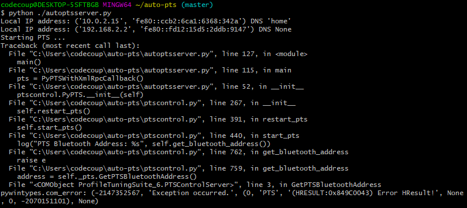
One or more of the following steps should help:
Close all PTS Windows.
Replug PTS bluetooth dongle.
Delete temporary workspace. You will find it in auto-pts-code/workspaces/zephyr/zephyr-master/ as temp_zephyr-master. Be careful, do not remove the original one zephyr-master.pqw6.
Restart Windows virtual machine.
The PTS automation window keeps opening and closing
This indicates that it fails to capture a PTS dongle. If the AutoPTS server is able to find and use a PTS dongle, then the title of the window will show the Bluetooth address of the dongle. If this does not happen then ensure that the dongle is plugged in, updated and recognized by PTS.
{kind=link}
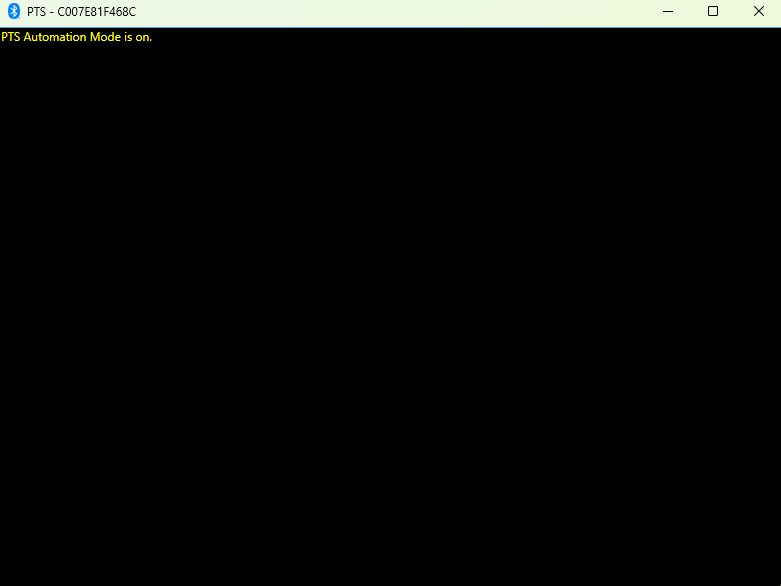
If it still fails to run tests after this, please ensure that the Bluetooth Protocol Viewer is installed.